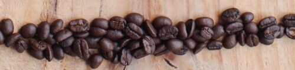

Tostado Claro o Canela.
Tiene acidez bastatne pronunciada, dejándonos una taza suave, clara, con notas florales y frutales
Tostado Medio.
Mandiene buen balance entre aroma y acidez. Mayor dulzor, especial para catas de café por el equilibrio que nos brinda.
Tostado Medio/Oscuro.
City o Full City Roas
Nos brinda un perfil de sabores complejos, con menor acidez y presenta complejidad de aromas. Notas achocolatadas más pronunciadas con un cuerpo medio.
Tostado Oscuro.
Proporciona sabores amargos (retrogusto) y más achocolatados con una acidez casi nula. Cuerpo presente y completo. Se peuden perder las notas frutales y florales por el grado de tostado.

Tostado Torrefacto.
No apropiado para cafés de alta calidad, el café torrefacto se tuesta a muy altas temperaturas, se le agrega azúcar o melaza y deja un sabor muy amargo. Se utiliza en café de muy baja calidad, comunmente conocido como el café instantáneo.
